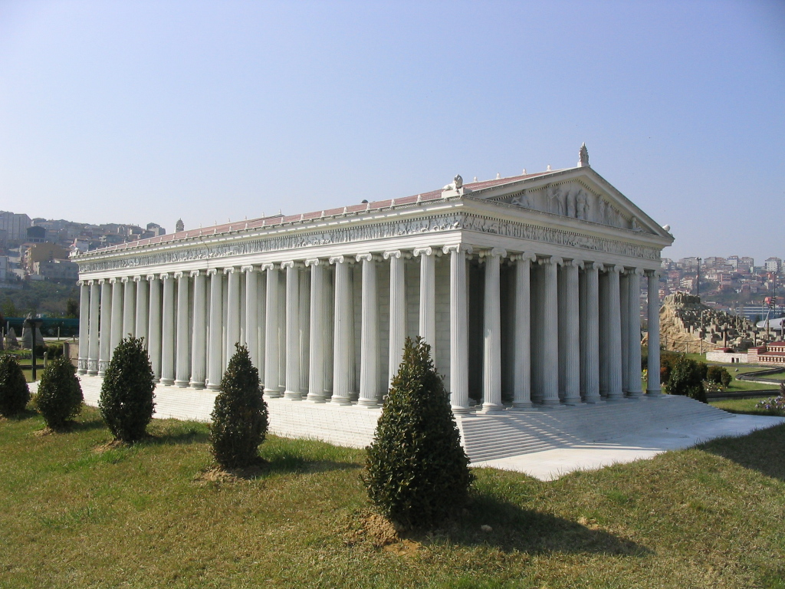
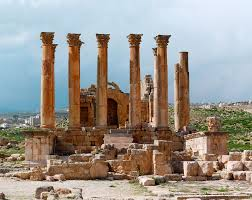

Artemidin tempelj ali Artemizijon, manj znan kot Dianin tempelj, je bil grški tempelj, posvečen boginji Artemidi. Je v Efezu (blizu sodobnega naselja Selçuk v današnji Turčiji). Eno od sedmih čudes antičnega sveta je bilo trikrat popolnoma obnovljeno pred končnim uničenjem leta 401. Na najdišču so še vedno temelji in deli kiparskega okrasa zadnjega templja. Prvo svetišče je bilo že pred jonsko kolonizacijo in je nastalo v bronasti dobi. Kalimah ga je v svoji Himni Artemidi pripisal Amazonkam. V 7. stoletju pred n. št. je stari tempelj uničila poplava. Njegova rekonstrukcijo sta okoli 550 pr. n. št. začela kretski arhitekt Herzifron in njegov sin Metagen po naročilu lidijskega kralja Kreza projekt je trajal 10 let. Tempelj je bil ponovno uničen leta 356 pr. n. št. v požaru in bil znova obnovljen.

Artemidin tempelj je stal v bližini starodavnega mesta Efez, približno 75 km južno od sodobnega pristaniškega mesta Izmir v Turčiji. Danes je kraj na robu današnjega naselja Selçuk.
Sveto mesto v Efezu je bilo veliko starejše od Artemidinega templja. Pavzanij je bil prepričan, da je nastalo pred jonsko kolonizacijo in bilo starejše od Apolonovega Didimajona v Didimi.Po njegovem mnenju so bili predjonski prebivalci mesta Lelegi in Lidijci. Kalimah je v svoji Himni Artemidi pripisal prvi temenos v Efezu Amazonkam, katere čaščenje je bilo po njegovem mnenju osredotočeno na podobo (bretas) Artemide, njihove matere boginje.
V 7. stoletju pred našim štetjem je tempelj uničila poplava, ki je nasula več kot pol metra peska in mulja nad prvotna tla gline. Med poplavnimi ruševinami so bili ostanki grifina iz rezbarjene slonovine in drevo življenja, očitno severnosirska in nekaj izvrtanih jantarnih kapljic eliptičnega prečnega prereza. Te so bile verjetno enkrat oblečene v leseno podobo Gospe iz Efeza, ki je bila uničena ali najdena med poplavo.

Leta 356 pr. n. št. je bil tempelj uničen v grozljivem požigu. Herostrat je ogenj podtaknil v lesenem ostrešju in si prizadeval za slavo za vsako ceno; od tod izraz herostratična slava. Efežani so zaradi tega smrtno obsodili storilca in prepovedali vsakomur omeniti njegovo ime; vendar ga je kasneje omenil Teopomp. V grški in rimski zgodovinski tradiciji je uničenje templja sovpadlo z rojstvom Aleksandra Velikega. Plutarh je opozoril, da je bila Artemida preveč zaskrbljena z rojstvom Aleksandra in ni utegnila rešiti svojega gorečega hrama.
unecentemplej